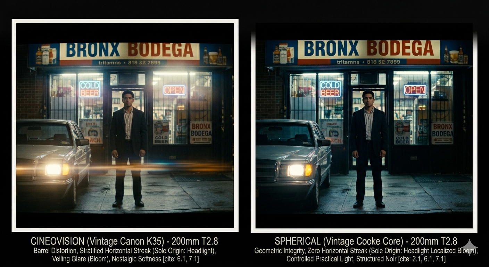

My DP Painted His Walls. I Built a Lens Reference with Claude.
A months-long prep process, a cinematographer who turned his apartment into a practice set, and how AI became part of how we walk into ARRI Rental knowing exactly what we want.
Pedro Feria PinoDP · Camera Operator · SOC · Co-Founder / VEFILM
This one has been a long time coming.
Back in November, Nelson Noel Salcedo called me about a project. A Bronx crime short called Knock Knock directed by Lorenzo Collado, a writer and director whose script had been sitting with him for a while, sharp and specific, set in the 90s Bronx. Drug deal gone wrong. Betrayal. The kind of story that needs to look like it actually happened. We started talking about the look immediately. What lenses. What format. What the Bronx should feel like on screen.
Nelson is not someone who shows up unprepared. You might know him as co-creator and cinematographer of Washington Heights on MTV, a show we built together from the ground up. He’s also one of the most naturally gifted photographers I’ve ever worked with. Raw talent. My favorite photographer, full stop. So when he told me he’d started painting his apartment walls to practice aging and distressing techniques for the production design, I wasn’t surprised. That’s who he is.
“Nelson started painting his apartment walls to practice aging techniques. Scouts, shot lists, storyboard sessions with the director. Months of prep before a single frame was shot.”
We did the location scout. Sat with Lorenzo on the shot list. Looked at cameras and lenses together. Built storyboards. Then delay after delay, the kind that happen on independent films. But the prep never stopped. And now we’re finally shooting.
Two ARRI Mini LFs. Vintage anamorphic glass. Nelson on A camera as DP. Me on B. They say B cam stands for Best cam. I've spent two decades in documentary and reality. This is my second narrative feature credit. You have to start somewhere. I'm starting here, with people I trust, on a story worth telling.
Why Anamorphic
The first real creative conversation wasn’t about which lenses. It was about why anamorphic at all. That conversation happened between me, Nelson, and Claude.
The answer comes from the story. A 2× anamorphic squeeze, shooting in the Mini LF 2.8K LF 1:1 mode, gives you a wider horizontal frame that feels true to how the Bronx actually reads: tight streets, cramped stairwells, but the frame still breathes. The oval bokeh and horizontal flares from practical light sources add tension and period-authentic nostalgia that spherical glass doesn’t give you. For a story built around betrayal in a drug deal gone wrong, that visual language earns its place.
When a DP and a B cam operator lock visual alignment before touching a spec sheet, everything on set moves faster. That conversation with Claude gave us a shared reference point.
Why It Matters · Anamorphic vs Spherical
What Anamorphic Gives You
The horizontal streak flare and oval bokeh are not accidents. They are the visual language of the format.
Fig 01Anamorphic left: horizontal blue streak flare with oval orbs, a product of the cylindrical element. Spherical right: warm circular glow with no streak. For a 90s Bronx crime story with practical streetlights and fluorescents, the anamorphic flare behavior is part of the visual language, not a side effect.
What You Actually See
Same Scene. Two Lenses.
Bronx stairwell · 35mm · T1.4 · Cineovision left vs Spherical right · Real render above, CSS breakdown below
Cineovision
T1.4 · Canon K35 Core · Warm
WARM · DRAMATIC FLARE · OVAL BOKEH · 2:1
Amber warmth coats the hallway. The practical overhead activates a full-width horizontal flare streak the moment it hits the anamorphic element. Oval bokeh pools in the corners. Edge falloff pushes the eye toward the door. The Bronx feels like memory.
Color Tone
Warm Golden
Flare Drama
Extreme
Bokeh Shape
Vertical Oval
Character
Very High
Xtal Express
T1.4 · Cooke S2 Core · Controlled
CONTROLLED · TIGHTER FLARE · OVAL BOKEH · 2:1
Cooler and more structured. The same hallway reads as harder evidence. The flare streak is tighter and more linear. Oval bokeh sits in the corners but more contained. The Bronx as present tense, not memory.
Color Tone
Neutral Cool
Flare Drama
High
Bokeh Shape
Vertical Oval
Character
Very High
Fig 02Top: real render. Bottom: CSS breakdown of what the glass is doing. Cineovision left: barrel distortion bows the walls, veiling glare from the window floods the frame, warm amber throughout. Spherical right: straight architecture, teal clean window with no bloom, sharp and clinical. Same stairwell. Two completely different stories.
Building the Full Lens Reference
ARRI Rental carries twelve anamorphic prime sets compatible with the Mini LF in Large Format mode. Different coating generations, different optical origins, different rendering philosophies, ranging from clean modern glass to deeply characterful vintage.
The problem isn’t finding information. The problem is having a real conversation about it. Spec sheets don’t tell you how a lens feels. I used Claude to build a full interactive reference covering all 12 sets: character, flare behavior, scored attributes, and scene fit against the specific script.
ARRI Rental · 12 Anamorphic Sets · Mini LF Compatible
Full Lens Reference Guide
Scored across sharpness, contrast, flare drama, character, and warmth. Built for Knock Knock pre-production.
Anamorphic · 2× · Vintage
Cineovision
Sharpness6.5
Flare Drama9.8
Character9.5
Warmth9.2
Anamorphic · 2× · Vintage
Xtal Express
Sharpness7.8
Flare Drama8.2
Character8.8
Warmth6.0
Anamorphic · 2× · Modern
Ultra Panavision
Sharpness9.5
Flare Drama6.0
Character7.2
Warmth5.5
Anamorphic · 2× · Vintage
Hawk V-Lite
Sharpness7.0
Flare Drama8.8
Character8.5
Warmth7.5
Anamorphic · 2× · Modern
Leica Summilux-C Ana
Sharpness9.2
Flare Drama5.5
Character6.8
Warmth6.2
Anamorphic · 2× · Vintage
LOMO Round Front
Sharpness5.5
Flare Drama9.2
Character9.8
Warmth7.8
Fig 04Six of twelve sets from the ARRI Rental anamorphic catalog, Mini LF compatible. Each scored across sharpness, flare drama, character, and warmth. Built with Claude as a production reference. Not a generic spec sheet.
This isn’t something ARRI publishes. It’s a tool built for this project. Something Nelson and I could sit with and have a real conversation about the look rather than trading opinions in a vacuum.
Narrowing to Two Candidates
Based on the script, the locations, and months of conversations with Nelson, we landed on two candidates: the Cineovision set and the Canon Xtal Express set. Both are complete vintage anamorphic prime packages, Japanese glass from the 1970s and 80s, built for Super 35. Both use Shiga Optical anamorphic elements. Same DNA at the core. The difference is the spherical taking lens. Cineovision runs Canon K35 or Zeiss Super Speed. Xtal runs Cooke S2/S3. Same skeleton. Different soul. Films shot on Xtals include Ex Machina, Guardians of the Galaxy, and Layer Cake.
Xtal Express 35mmT1.4–1.6 · Cooke S2/S3 / Shiga Elements
Tight linear blue streak precise, controlled
Fewer orbs, smaller less theatrical
Classic vintage character without the drama
Fig 0535mm T1.4. Cineovision left: enormous amber haze fills the room, full-frame horizontal streak from the lamp, large oval orbs, figure barely visible. Xtal Express right: lamp sits clean, tight local bloom, figure sharp and defined, money readable on the floor. Same Shiga DNA. Different soul.
35mm · Head to Head
Cineovision vs Xtal Express · Key Attributes
Both sets built on Shiga anamorphic elements · Difference is in the spherical taking lens
Cineovision
Xtal Express
Aperture
T1.4
T1.4–T1.6
Core Glass
Canon K35 · Zeiss Super Speed · Zeiss Contax
Cooke S2/S3 · Zeiss B-Speed
Color Tone
Warmest golden
Neutral warm
Sharpness
Painterly soft wide open
Sharper defined
Flare Drama
Dramatic wide oval orbs
Controlled linear
Oval Bokeh
Very pronounced
Excellent
Barrel Distortion
Significant at 35mm
Less pronounced
Breathing
Moderate at 35mm
Lower more reliable
Best Use
Night interiors · Practical lights · Maximum character
Day exteriors · Focus pulls · Handheld world · Character with control
Fig 06Head-to-head across warmth, sharpness, flare drama, oval bokeh, distortion, and breathing. Both are legitimate candidates. The eye test at ARRI makes the final call.
The Telephoto Shot
There’s a specific exterior in the script. A surveillance-style compressed Bronx street. That shot needs a telephoto. The decision was to stay in the family: 200mm on whichever set we land on after the eye test. I built a separate comparison showing how each lens renders a Bronx block differently at distance.
Bronx Exterior · 200mm · Surveillance Framing
City Compression Cineovision vs Xtal Express
How each lens renders depth, warmth, and atmosphere on a compressed Bronx street

Cineovision
200mm · T2.8 · Warm rendering
Amber haze bakes into the entire frame. Windows glow warm gold. The full-frame horizontal flare from the streetlight is unmistakably anamorphic. The city feels alive painted, not recorded.
Xtal Express
200mm · T2.8 · Cooler rendering
Cold blue atmosphere. Windows read clinical, blue-white. Flare is tight and linear. No drama, just information. The Bronx as evidence, not memory.
Fig 07Bronx bodega exterior at 200mm T2.8. Cineovision left: warm amber grade, car headlight throws a full-width horizontal streak across the bottom third, veiling glare softens the storefront, nostalgic. Spherical right: cool and structured, headlight is localized bloom only with no streak, brick reads through the facade, evidence not memory. The eye test at ARRI makes the final call.
Lens Reference
Barrel Distortion
How Each Lens Bends Architecture in the Frame. Bronx Stairwells, Walls, Ceilings.
Anamorphic
Cineovision
Lines bow hard at wide focal lengths. Stairwells feel unstable. Cylindrical perspective adds spatial unease that serves the story.
Anamorphic
Xtal Express
Gentler bow. Architecture still bends but stays readable. More consistent across focal lengths. Exterior shots stay structured.
Reference
No Distortion
Theoretical perfect lines. No lens renders this. Shown for reference against the two sets above.
Fig 08Barrel distortion comparison at wide focal lengths. Cineovision bends architecture most dramatically. Walls bow, stairwells feel unstable. Xtal Express is more controlled. Neither is a flaw. For a crime story set in tight Bronx interiors, the spatial unease is part of the visual language.
Where We Are Now
Nelson and I are walking into ARRI Rental knowing exactly which two lens sets we want to look at. We know the coating generations, the flare character, the optical origins, and how each set maps to specific scene types, from wide stairwell interiors to the 200mm compressed exterior.
Meanwhile Lorenzo is still writing. Rewriting. Adding scenes. The script is alive. That’s how it should be.
When he’s ready, we bring him in. We sit down together, walk him through everything we built. The comparisons, the flare simulations, the distortion charts, the head-to-heads. All of it. And then the final decision is his. It always was. This is his story. Whatever serves the story is the right answer.
The eye test makes the technical call. You still have to put your eye to the glass. That part AI doesn’t replace. But we’re not walking in cold. We’re not browsing. We’re not wasting their time or ours.
“The final decision is the director’s. It always was. Whatever serves the story is the right answer.”
Months of prep. Delays. A DP who painted his apartment walls to get the aging right. A director still living inside the script. And a technical team that did the homework so the creative conversation can stay creative.
This is what preparation looks like on the production side. This is how I’m building at VEFILM. More of this to come as Knock Knock moves into production.
Update · April 2026
We are going to ARRI on Tuesday. Nelson and I are walking in to look at the glass in person. The reference work is done. Lorenzo is still in the writing. When it’s time, we bring it all to him and let the story decide.
Brooklyn-based DP, Director, and SOC member. Founder of VEFILM. Co-creator of Washington Heights, the first Latino-centric docu-series on MTV. DP on Buried by the Bernards for Netflix. Inside the FBI for USA Network. Building AI-native production pipelines for narrative and documentary work.
Washington Heights · MTVBuried by the Bernards · NetflixInside the FBI · USA Network
One of the most naturally gifted photographers working in independent film. DP on Knock Knock. Co-creator and cinematographer of Washington Heights, the first Latino-centric docu-series on MTV.
Washington Heights · MTV · Co-Creator & DPKnock Knock · Director of Photography
Next Article
Using MidJourney for Storyboards, Visual Concepts & Placeholders
How AI image generation is replacing early placeholder frames, concept art, and visual development in the Knock Knock pre-production pipeline. And why that changes how a director communicates with a DP before a shot list exists.